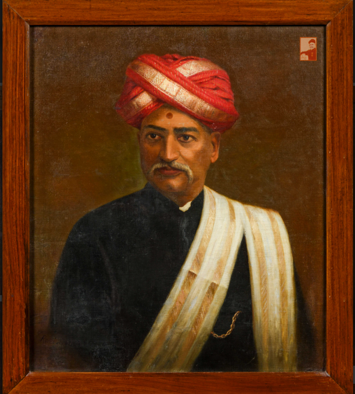

Raja Ravi Varma was one of the most well-known Indian painters of the 19th century.
He was famous for combining traditional Indian subjects with European techniques of painting. His artworks often portrayed scenes from Indian mythology, epics, and the literature, including characters such as gods, goddesses, and legendary figures.
He received early artistic training in Kerala and later developed his skills in realistic painting and portraiture. His paintings became widely admired for their detailed figures, expressive faces, rich costumes, and realistic style.
Raja Ravi Varma also played an important role in making Indian art more accessible to ordinary people. His paintings were reproduced as prints, allowing his artistic representations of Indian mythological characters to reach a much larger audience.
Some of his well-known works include Shakuntala, Galaxy of Musicians, and Hamsa Damayanti. His contribution to Indian art continues to be remembered and studied today.